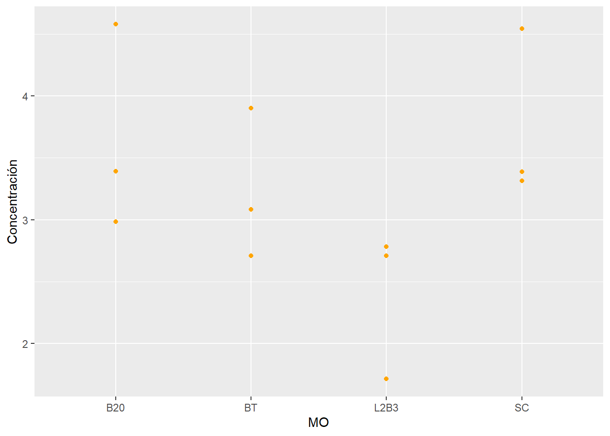

suppressPackageStartupMessages(library(tidyverse))
library(ggplot2)
library(readxl)
Fosforo <- read_excel("Fosforo.xlsx")La ciencia y el poder han mantenido una relación compleja a lo largo de la historia. Mientras que la ciencia busca el conocimiento y la verdad, el poder, en muchas ocasiones, intenta moldear los resultados científicos para servir a sus propios intereses. Esta tensión se manifiesta en varios problemas contemporáneos que enfrenta la ciencia. Según Infobae (2016), entre estos problemas destacan siete en particular: la crisis financiera, el mal diseño de muchos estudios, la escasa revalidación de investigaciones, el fracaso del sistema de revisión por pares, el alto costo de acceso a artículos científicos, la transmisión errónea de la ciencia y el estrés significativo en la vida de los jóvenes científicos.
Nota
La ciencia y el poder han mantenido una relación compleja a lo largo de la historia. Mientras que la ciencia busca el conocimiento y la verdad, el poder, en muchas ocasiones, intenta moldear los resultados científicos para servir a sus propios intereses. Esta tensión se manifiesta en varios problemas contemporáneos que enfrenta la ciencia. Según Infobae (2016), entre estos problemas destacan siete en particular: la crisis financiera, el mal diseño de muchos estudios, la escasa revalidación de investigaciones, el fracaso del sistema de revisión por pares, el alto costo de acceso a artículos científicos, la transmisión errónea de la ciencia y el estrés significativo en la vida de los jóvenes científicos.
Advertencia
Estos desafíos requieren una reconfiguración profunda de cómo se practica la ciencia. Un cambio de paradigma hacia una ciencia más orientada a soluciones reales y accesibles es crucial (Velázquez-Pérez y Velázquez-Velázquez, 2023). En este contexto, la ciencia abierta se presenta como una solución prometedora. Esta aboga por la transparencia, accesibilidad y colaboración en la investigación científica.
Importante
Según Anglada y Abadal (2018), el proyecto Foster, uno de los portales más completos sobre ciencia abierta, visualiza este concepto como un panal de abejas, donde cada celda representa un componente esencial. Entre estos componentes se encuentran los cuadernos abiertos (open notebooks), datos abiertos, revisión abierta, acceso abierto (open access), software libre, redes sociales académicas, ciencia ciudadana y recursos educativos abiertos.
Es importante diferenciar entre ciencia abierta (Definición 1) y acceso abierto (Definición 2).
Definición 1 la ciencia abierta engloba un espectro más amplio de prácticas, incluyendo la apertura de datos, métodos y la participación pública en la investigación ciencia abierta (Mejía-Ponce, 2023).
Definición 2 el acceso abierto se refiere principalmente a la disponibilidad gratuita de artículos científicos acceso abierto.
Tip
Las motivaciones para adoptar la ciencia abierta son variadas: desde el deseo de mejorar la reproducibilidad y transparencia, hasta la necesidad de democratizar el acceso al conocimiento.
Precaución
El establecimiento de un marco para la ciencia abierta enfrenta varios desafíos, como la resistencia al cambio por parte de algunas instituciones, la falta de infraestructura adecuada y la necesidad de cambiar las normas de evaluación científica (García-Peñalvo, 2017; Fressoli y Arza, 2018). Además, la ética y la calidad de la información son pilares fundamentales en este modelo, por lo que publicar en el ecosistema de la ciencia abierta requiere adherirse a estándares rigurosos que aseguren la integridad y precisión de los datos (Antunes et al., 2020).
En Latinoamérica, la implementación de normativas en este nuevo contexto presenta tendencias y desafíos específicos. México, por ejemplo, ha experimentado una crisis en su sistema científico debido a la Ley Federal de Austeridad Republicana de Estado y la emisión del memorándum regulador de medidas de austeridad, este último documento “regula” el uso del presupuesto en ciencia y tecnología. La crisis de la ciencia mexicana y los esfuerzos significativos por hacer ciencia abierta en el país ejemplifican los desafíos y oportunidades que se enfrentan en la región (Vázquez-Reyes, 2019; García-Guerrero, 2024; Peña, 2024). En conclusión, la ciencia abierta representa una vía hacia una práctica científica más ética, accesible y colaborativa, pero su implementación requiere un compromiso concertado y una visión estratégica para superar las barreras actuales.
Abadal, E. (2021). Ciencia abierta: un modelo con piezas por encajar. Arbor, 197(799), a588-a588.
Anglada, L., y Abadal, E. (2018). ¿Qué es la ciencia abierta? Anuario ThinkEPI, 12, 292-298.
Antunes, M. D. L., Sanches, T., Lopes, C., y Alonso-Arévalo, J. (2020). Publicar en el ecosistema de la ciencia abierta. Cuadernos de Documentación Multimedia, (31), 1-11.
ggplot(Fosforo, aes(x = MO, y = `Concentración`)) +
geom_point(color = "orange")
library(flextable)
Adjuntando el paquete: 'flextable'The following object is masked from 'package:purrr':
composelibrary(docxtractr)
docx <- list.files("Datos/", pattern = "^A.*docx$", full.names = TRUE)
docx <- read_docx(docx)
nombre_vars <-c("MO", "`Concentración`")
# Olmeca
arboles <- docx_extract_tbl(docx = docx, tbl_number = 1, header = TRUE)Referencias
Antunes, M. da L., Sanches, T., Lopes, C., & Alonso-Arévalo, J. (2020). Publicar en el ecosistema de la ciencia abierta. Cuadernos de Documentación Multimedia, 31, e71449. https://doi.org/10.5209/cdmu.71449
Mejía-Ponce, Ma. E. (2023). Ciencia abierta y acceso abierto: una aproximación conceptual a la ética y la calidad de la información. Dixi, 26(1), 1-28. https://doi.org/10.16925/2357-5891.2024.01.04